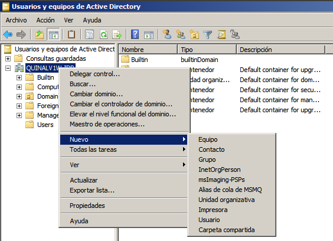
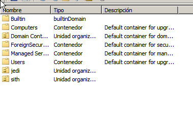
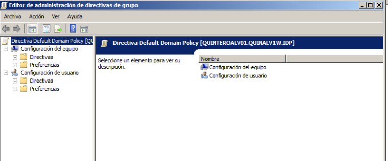

- Módulo: Sistemas Operativos
- Título del trabajo PDC Políticas o directivas grupo
- Componentes del grupo: Gregorio Adrián Quintero Álvarez
- Curso Académico: 2013/2014
- Fecha de entrega: 5 de Mayo de 2014
Necesitaremos establecer unas directivas para la OU 'jedi' y otras distintas para la OU 'sith' para que tengan estos resultados en sus usuarios: 
Para editar las configuraciones de las directivas de grupos hay que buscar la Administración de directivas de grupo, después en el árbol de consola buscamos las directivas de grupo que queremos modificar hacemos doble clic y las modificamos. 
- Quitar el menú Ejecutar del menú Inicio
- Prohibir el acceso al Panel de control
- Ocultar el icono Mis sitios de red del escritorio
- Quitar el icono Mis sitios de red del menú inicio
- Quitar Conexiones de red del menú Inicio
- Ocultar unidades específicas en Mi PC
- Habilitar Quitar “Conectar a unidad de red” y “Desconectar de unidad de red”